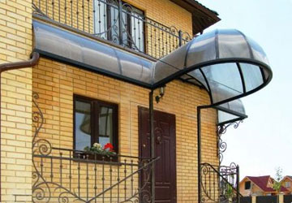

Входная дверь выполняет несколько функций: защищает ваш дом от незванных гостей, а также является важнейшим элементом, как внутреннего, так и внешнего оформления дома. Хотя «бедные» девяностые остались позади, и выбор дверей огромен, иногда выбрать подходящую модель бывает сложно.
Однако выбор двери зависит не только от ваших личных предпочтений. Особенности вашего дома, — вот какой фактор кроме человеческого вкуса, подсказывает нам, что купить. Например, если выживете в большом особняке за чертой города, вам наверняка понадобятся массивные высокопрочные двери. Жители однокомнатной квартиры в центре города на среднем этаже, вряд-ли выберут такой вариант, ведь слишком большие двери в такой квартире будут смотреться нелепо.
Советы по выбору дверей
- Еще один способ обезопасить дверь от снятия — скрытые петли. Несмотря на то что, дверь со скрытыми петлями — это не 100% гарантия защиты квартиры от взлома, но даже при самой высокой квалификации.
- Перед тем, как выбрать входные двери нужно учесть количество петель, а оно зависит от веса изделия.
- Стоимость дверей с такой системой защиты выше, но защитьа вашего жилья и ваших близких — прежде всего. Как говорится, в таком вопросе экономия излишня.
Декор двери в загородном доме
- Не покупайте двери в сомнительных компаниях, которые не дают гарантию на свои изделия, в строительных магазинах, надеясь сэкономить хорошую сумму.
- Изготовив дверь под ваш разьем, мастера её установят и демонтируют старую.
- При этом стоит обратить особое внимание на качество заделки щелей между рамами двери и стеной. Самым лучшим материалом для такой работы по праву считается бетон, а не монтажная пена.